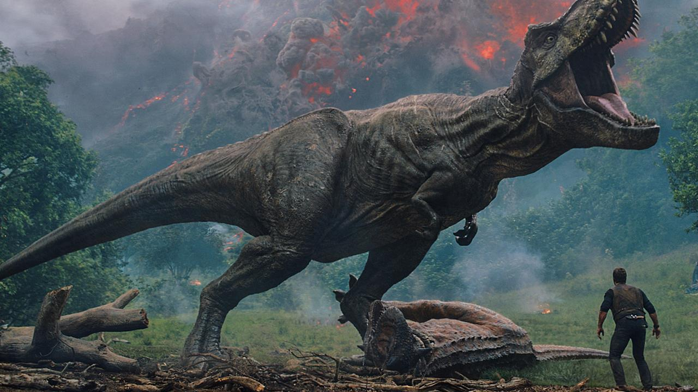

Overview

The Tyrannosaurus Rex, commonly known as T-Rex, is one of the most iconic dinosaurs. It was a massive carnivorous dinosaur that lived during the late Cretaceous period.
Physical Characteristics
- Length: Up to 40 feet (12 meters)
- Height: Up to 20 feet (6 meters) at the hips
- Weight: Estimated around 9 tons
- Sharp teeth and powerful jaws
Habitat
T-Rex inhabited what is now North America, particularly in areas that were once lush forests and floodplains.
Diet
T-Rex was a carnivore, primarily feeding on large herbivorous dinosaurs. It may have also scavenged for food.
Explore Velociraptor